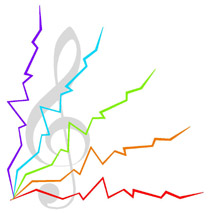
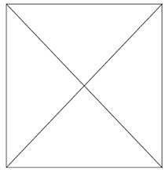
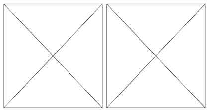
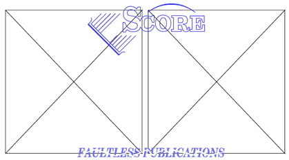
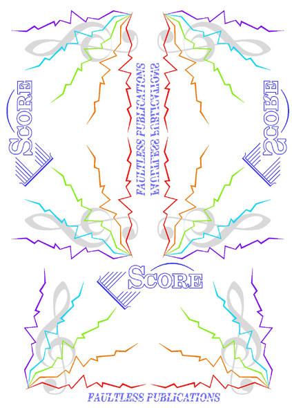
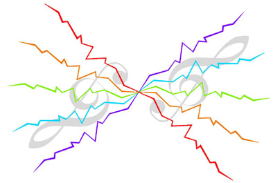
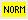
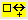
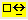

Code 15 -- Importing Score PostScript Files -- parameter structure |
P1 code number (15)
P2 staff number
P3 horizontal position
P4 vertical position
P5 horizontal size
P6 vertical size
P7,
8, 9, 10 bounding box numbers --Do Not
Change
P11 Do Not Change
P12 rotation
P13 set EPS file name
P14, 15 contain EPS file name
EPS (Encapsulated PostScript) files created by SCORE may be combined and manipulated in many ways by the use of Code 15. The graphics in the following example were used to create an EPS file to demonstrate the method of using this feature.

First type 15 a b c, where a is a staff number, b is the horizontal position, and c is the vertical position.
The program will prompt you for a file name. The EPS extension need not be typed, however it is advisable to give the complete path. (E.g. C:\MUS\PICTURE.EPS)
A rectangle indicating the bounding box limits of the graphics will appear.
This box may be moved, scaled or rotated using the normal editing commands.

Then a copy of the box was moved 180 steps to the right
and the horizontal size parameter, P5, was set to -1 to
create a reverse image.

Other items were added; Code 9 items and text.

The result, when printed, appears as below.
This then may be used to create a new EPS file.
Below, three copies of the new file are juxtaposed
in various ways.

P12 is used to rotate the image by degrees. In the following,
two copies of the EPS file are used. The first has P12 set
to -135 and the second has P12 set to 45.

If P13 is set to 1, a new PostScript file name will be requested. If no specific path is given, the user's current directory will be searched. If the the file is not found, then \WinScore\Scorlib\ will be searched, If the file is in some other location, the complete path must be typed.
Toolbar buttons 
= set PostScript file name (same
as typing 13 1.)
= increase vertical size
= decrease
 
___________________________________________________________________________
Function Key Setup for Code 15
| F1 Help |
F2 Back to Previous Item |
F3 Forward to Next Item |
F4 Back to Previous Item, Same Code # |
F5 Forward to Next Item, Same Code # |
F6 . . . |
| F7 . . . |
F8 . . . |
F9 Exit from Edit Mode ( X ) |
F10 . . . |
F11 Delete, Move to Previous, Same Code # |
F12 Delete, Move to Next, Same Code # |